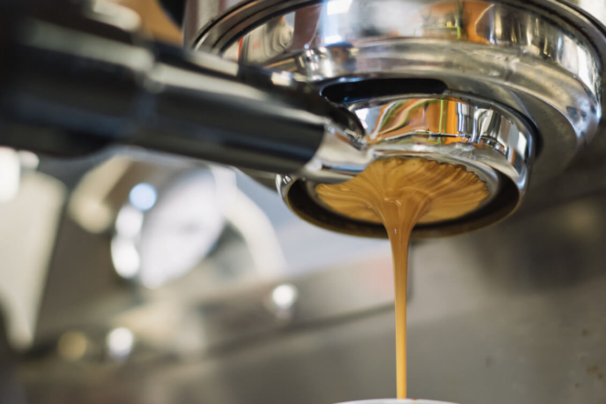

01
Cafés Especiales
Café de primerísima calidad preparado de forma excelente. Nace destinado a proporcionar momentos de máximo deleite sensorial, cuidando cada detalle en su recogida, proceso de elaboración, tostado y preparación.
“No es espuma. Es textura. Leche tratada con precisión.”